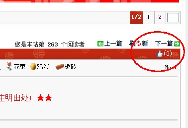

看贴子点“赞”是一种美德
#1 <font color="red">看贴子点“赞”是一种美德</font> 作者：小丸.net 发表时间：2013-8-14 13:02:57
不说话，直接上图。

不想回帖，点个赞吧，表示对楼主的认同。每人每贴仅一次机会。
#2 Re:看贴子点“赞”是一种美德 作者：屏蔽 发表时间：2013-8-14 13:32:53
建议放在花束之后……要不然一点存在感都没有#3 Re:看贴子点“赞”是一种美德 作者：有志青年 发表时间：2013-8-14 13:43:56
索性在往下一行，放在“请注明出处！★★”的后面，搞个稍微大一点的图标#4 Re:看贴子点“赞”是一种美德 作者：小丸.net 发表时间：2013-8-14 13:45:34
回头我来调一下，看看那里好看。